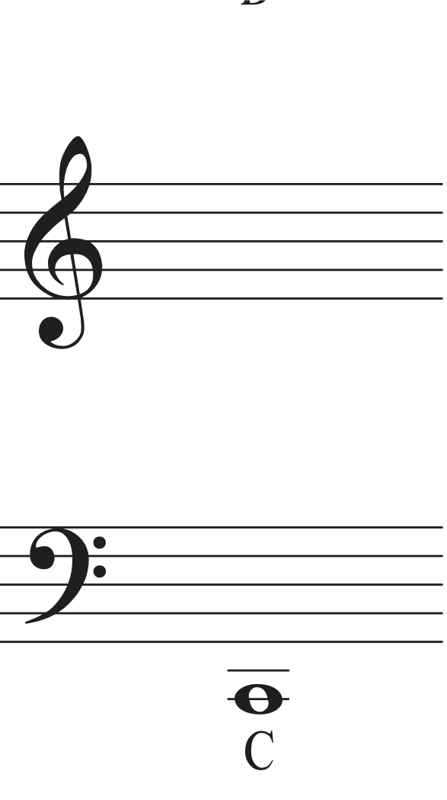
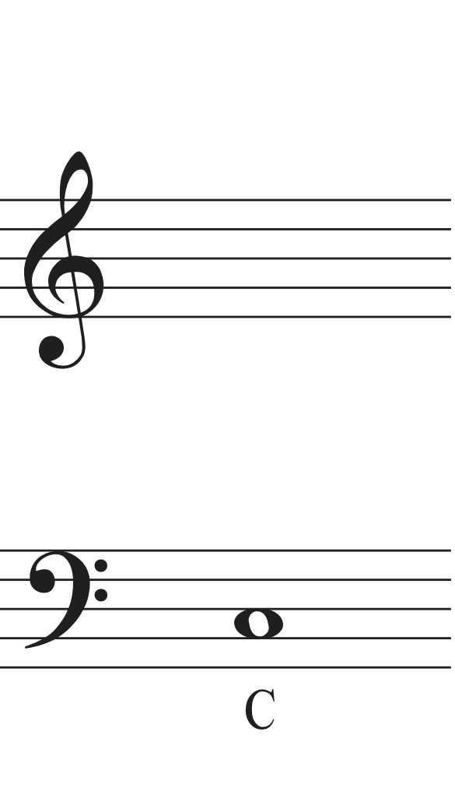
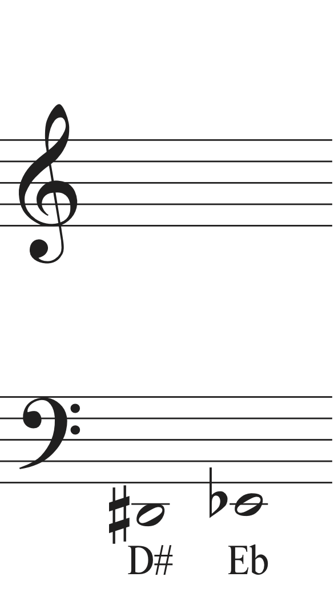
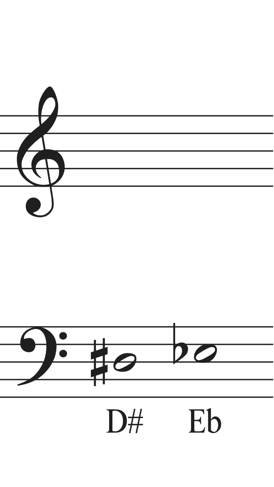

To move from concert pitch to written string bass pitch, raise the selected concert pitch by the interval of an octave.
| Concert Pitch | Octave-Displacement | Written String Bass Pitch |
|---|---|---|
|  | ⬆ an Octave |  |
|  | ⬆ an Octave |  |
From Written String Bass Pitch to Concert PitchTo move from written string bass pitch to concert pitch, lower the selected written pitch by the interval of an octave. |
||
| Written String Bass Pitch | Octave-Displacement | Concert Pitch |
| ⬇ an Octave | ||
| ⬇ an Octave | ||